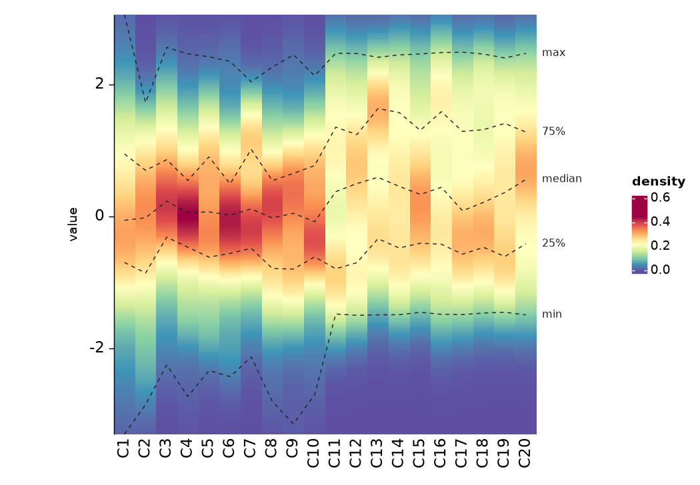
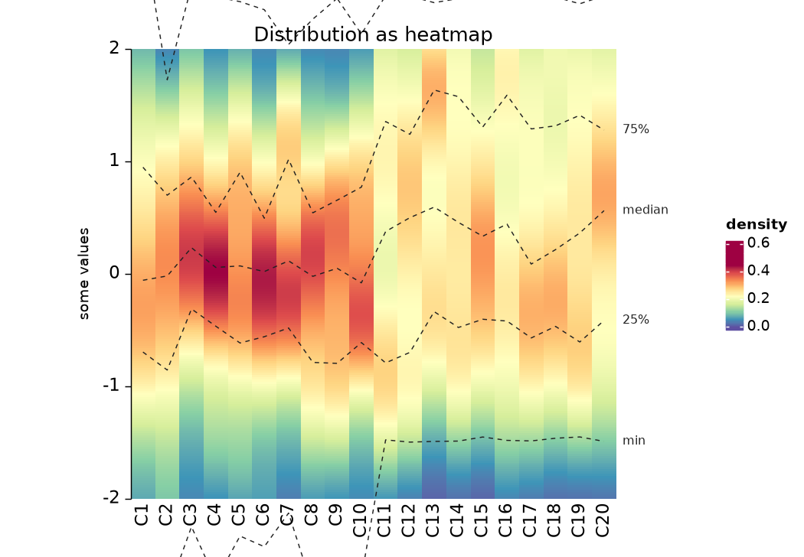
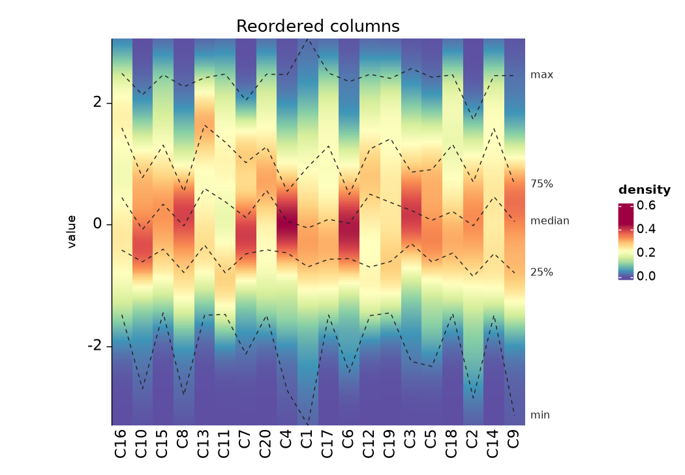
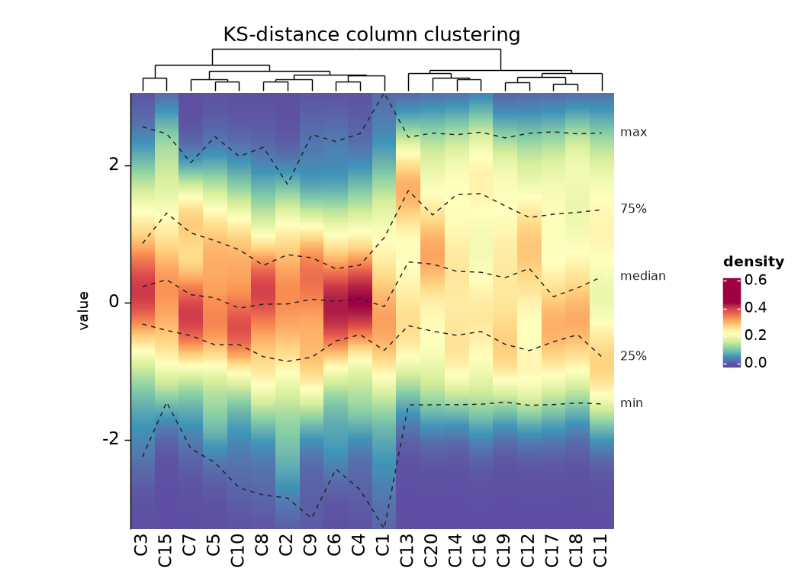
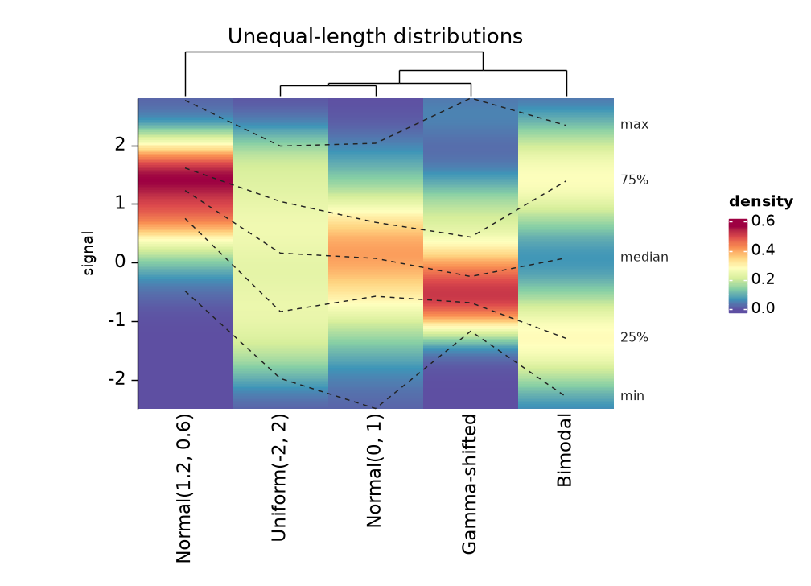
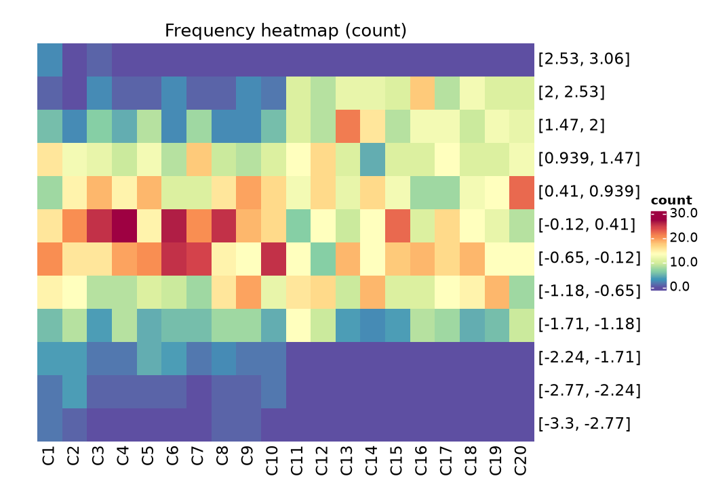
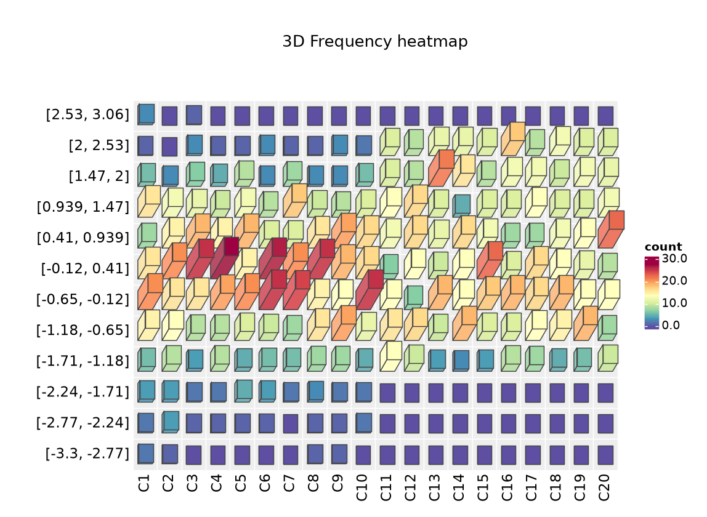
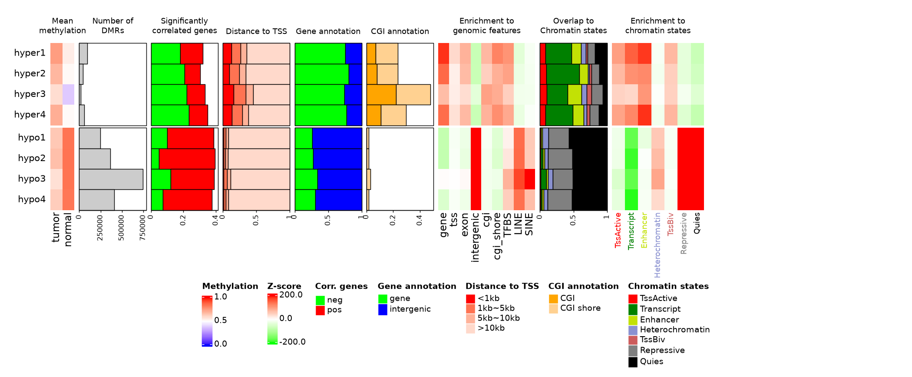

11 Other High-level Plots#
Beyond standard matrix heatmaps, OncoPrints, and UpSet plots,
ComplexHeatmap-py provides high-level visualizations for
summarizing continuous distributions across many samples
(densityHeatmap(), frequencyHeatmap()) and
composing multi-panel summary dashboards from heterogeneous
statistics.
11.1 Density heatmap#
When comparing distributions across many columns or groups, boxplots
and violin plots can become visually cluttered.
densityHeatmap() estimates a kernel density curve for each
distribution using scipy.stats.gaussian_kde, maps the
density values to colors, and overlays five summary quantiles
(min, 25%, median,
75%, max) as dashed curves across columns.
In the examples below, we construct a 100 × 20 matrix where the first
10 columns follow a standard normal distribution and the last 10 columns
follow a shifted uniform distribution on [-1.5, 2.5]:
import numpy as np
import pandas as pd
import complexheatmap as ch
rng = np.random.default_rng(123)
m = pd.DataFrame(
np.hstack([rng.normal(size=(100, 10)), rng.uniform(-2.0, 2.0, size=(100, 10)) + 0.5]),
columns=[f"C{i + 1}" for i in range(20)],
)
# Extra legend padding keeps the quantile labels on the right clear of the colorbar
ch.ht_opt.HEATMAP_LEGEND_PADDING = ch.unit(14, "mm")
dh = ch.densityHeatmap(m)
ch.draw(dh, padding=ch.unit([4, 18, 4, 4], "mm"))
The y-axis value range is controlled by ylim, the main
title by title (or column_title), and the
y-axis label by ylab:
dh = ch.densityHeatmap(m, ylim=(-2, 2), title="Distribution as heatmap", ylab="some values")
ch.draw(dh, padding=ch.unit([4, 18, 4, 4], "mm"))
Column ordering can be specified directly via 0-based
column_order:
perm = np.random.default_rng(42).permutation(m.shape[1]).tolist()
dh = ch.densityHeatmap(m, column_order=perm, title="Reordered columns")
ch.draw(dh, padding=ch.unit([4, 18, 4, 4], "mm"))
The density color gradient is controlled by col (a list
of colors passed to colorRamp2):
dh = ch.densityHeatmap(m, col=ch.hcl_colors(10, palette="viridis"), title="Custom color palette")
ch.draw(dh, padding=ch.unit([4, 18, 4, 4], "mm"))
Because all columns are evaluated on a shared y-grid,
densityHeatmap() supports hierarchical clustering across
columns. By default, when cluster_columns=True,
clustering_distance_columns="ks" computes pairwise
two-sample Kolmogorov-Smirnov statistics via ks_dist():
dh = ch.densityHeatmap(
m,
cluster_columns=True,
clustering_distance_columns="ks",
title="KS-distance column clustering",
)
ch.draw(dh, padding=ch.unit([4, 18, 4, 4], "mm"))
In addition to NumPy arrays and Pandas DataFrames,
densityHeatmap() accepts a Python dict or
list of 1D arrays with unequal sample sizes:
rng_l = np.random.default_rng(99)
dist_dict = {
"Normal(0, 1)": rng_l.normal(0.0, 1.0, 120),
"Normal(1.2, 0.6)": rng_l.normal(1.2, 0.6, 80),
"Uniform(-2, 2)": rng_l.uniform(-2.0, 2.0, 200),
"Bimodal": np.concatenate([rng_l.normal(-1.4, 0.45, 70), rng_l.normal(1.4, 0.45, 70)]),
"Gamma-shifted": rng_l.gamma(2.0, 0.6, 150) - 1.2,
}
dh = ch.densityHeatmap(dist_dict, cluster_columns=True, title="Unequal-length distributions", ylab="signal")
ch.draw(dh, padding=ch.unit([4, 18, 4, 4], "mm"))
Column annotations can be placed on top via anno= (the
densityHeatmap parameter for top_annotation)
and on the bottom via bottom_annotation=:
ha1 = ch.HeatmapAnnotation(
dist=["rnorm"] * 10 + ["runif"] * 10,
col={"dist": {"rnorm": "#E41A1C", "runif": "#377EB8"}},
)
ha2 = ch.HeatmapAnnotation(foo=ch.anno_points(np.random.default_rng(7).normal(size=20)))
dh = ch.densityHeatmap(m, anno=ha1, bottom_annotation=ha2, title="Density heatmap with annotations")
ch.draw(dh, padding=ch.unit([4, 18, 4, 4], "mm"), merge_legends=True)
Because densityHeatmap() returns a Heatmap
object whose columns correspond to samples, it can be concatenated
vertically (% ch.v % or /) with
HeatmapAnnotation and Heatmap objects sharing
the same columns:
mat_v = pd.DataFrame(np.random.default_rng(21).normal(size=(20, 20)), columns=m.columns)
ht_v = (
ch.densityHeatmap(m, title="Density + Heatmap vertical stack")
% ch.v %
ch.HeatmapAnnotation(foo=ch.anno_barplot(np.arange(1, 21)))
% ch.v %
ch.Heatmap(mat_v, name="mat", height=ch.unit(6, "cm"), show_column_names=True)
)
ch.draw(ht_v, padding=ch.unit([4, 18, 4, 4], "mm"))
frequencyHeatmap() is the histogram counterpart to
densityHeatmap(), binning values across columns into counts
(stat="count"), proportions
(stat="proportion"), or empirical densities
(stat="density"). Setting use_3d=True renders
each bin cell as a 3D isometric bar (see Chapter 12 for details):
ch.draw(ch.frequencyHeatmap(m, title="Frequency heatmap (count)"))
ch.ht_opt.TITLE_PADDING = ch.unit([10, 2], "mm")
ch.ht_opt.HEATMAP_LEGEND_PADDING = ch.unit(8, "mm")
fh3d = ch.frequencyHeatmap(
m,
use_3d=True,
title="3D Frequency heatmap",
top_annotation=ch.HeatmapAnnotation(
_spacer=ch.anno_empty(border=False, height=ch.unit(6, "mm")),
show_annotation_name=False,
),
bar_max_length=ch.unit(8, "mm"),
)
ch.draw(fh3d, padding=ch.unit([4, 10, 6, 6], "mm"))

11.2 Stacked summary plot#
Multiple Heatmap and rowAnnotation
components can be combined horizontally to assemble rich multi-statistic
summary figures for a shared set of genomic features.
ComplexHeatmap-py bundles the dmr_summary
dataset containing summary metrics for differentially methylated regions
(DMRs) across four subgroups separated into hyper- and hypo-methylated
sets:
label: Names for the 8 DMR sets (hyper1..hyper4,hypo1..hypo4).mean_meth: Mean methylation in tumor and normal samples.n_gr: Number of DMRs in each set.n_corr: Fraction of DMRs with significant negative or positive correlation to nearby genes.dist_tss: Proportion of DMRs within<1kb,1kb~5kb,5kb~10kb, and>10kbof the nearest TSS.gene_anno: Proportion of DMRs overlapping genes vs. intergenic regions.cgi_anno: Proportion of DMRs overlapping CpG islands (CGI) vs. CGI shores.mat_enrich_gf: Enrichment Z-scores across genomic features.mat_pct_st: Proportion of DMRs overlapping chromatin states.mat_enrich_st: Enrichment Z-scores across chromatin states.
Note that dmr_summary stores the single-column tables
label and n_gr as the DataFrame
.index:
import re
dmr = ch.load_dataset("dmr_summary")
label = dmr["label"].index.tolist()
n_gr = dmr["n_gr"].index.to_numpy(dtype=float)
mean_meth = dmr["mean_meth"]
n_corr = dmr["n_corr"]
dist_tss = dmr["dist_tss"]
gene_anno = dmr["gene_anno"]
cgi_anno = dmr["cgi_anno"]
mat_enrich_gf = dmr["mat_enrich_gf"]
mat_pct_st = dmr["mat_pct_st"]
mat_enrich_st = dmr["mat_enrich_st"]
meth_col_fun = ch.colorRamp2([0, 0.5, 1], ["blue", "white", "red"])
corr_col = ["green", "red"]
dist_tss_col = ["#FF0000", "#FF7352", "#FFB299", "#FFD9CB"]
gene_anno_col = ["green", "blue"]
cgi_anno_col = ["#FFA500", "#FFD191"]
z_score_col_fun = ch.colorRamp2([-200, 0, 200], ["green", "white", "red"])
state_col = ["#FF0000", "#008000", "#C2E105", "#8A91D0", "#CD5C5C", "#808080", "#000000"]
anno_width = ch.unit(2.8, "cm")
ht_list = (
ch.rowAnnotation(
text=ch.anno_text(label, location=ch.unit(1, "npc"), just="right", gp=ch.gpar(fontsize=11)),
)
+ ch.Heatmap(
mean_meth,
name="mean_meth",
col=meth_col_fun,
cluster_rows=False,
row_title=None,
cluster_columns=False,
show_row_names=False,
heatmap_legend_param={"title": "Methylation"},
width=ch.unit(mean_meth.shape[1] * 5, "mm"),
)
+ ch.rowAnnotation(n_gr=ch.anno_barplot(n_gr, bar_width=1, width=anno_width), show_annotation_name=False)
+ ch.rowAnnotation(n_corr=ch.anno_barplot(n_corr.to_numpy(), bar_width=1, gp=ch.gpar(fill=corr_col), width=anno_width), show_annotation_name=False)
+ ch.rowAnnotation(dist_tss=ch.anno_barplot(dist_tss.to_numpy(), bar_width=1, gp=ch.gpar(fill=dist_tss_col), width=anno_width), show_annotation_name=False)
+ ch.rowAnnotation(gene_anno=ch.anno_barplot(gene_anno.to_numpy(), bar_width=1, gp=ch.gpar(fill=gene_anno_col), width=anno_width), show_annotation_name=False)
+ ch.rowAnnotation(cgi_anno=ch.anno_barplot(cgi_anno.to_numpy(), bar_width=1, gp=ch.gpar(fill=cgi_anno_col), width=anno_width), show_annotation_name=False)
+ ch.Heatmap(
mat_enrich_gf,
name="enrich_gf",
col=z_score_col_fun,
cluster_columns=False,
width=ch.unit(mat_enrich_gf.shape[1] * 4.5, "mm"),
column_title="",
heatmap_legend_param={"title": "Z-score"},
)
+ ch.rowAnnotation(pct_st=ch.anno_barplot(mat_pct_st.to_numpy(), bar_width=1, gp=ch.gpar(fill=state_col), width=anno_width), show_annotation_name=False)
+ ch.Heatmap(
mat_enrich_st,
name="enrich_st",
col=z_score_col_fun,
cluster_columns=False,
width=ch.unit(mat_enrich_st.shape[1] * 5.5, "mm"),
column_title="",
show_heatmap_legend=False,
column_names_gp=ch.gpar(col=state_col, fontsize=9),
show_row_names=False,
)
)Since anno_barplot() tracks do not auto-generate
legends, we build explicit Legend() entries and place all
legends horizontally along the bottom, then add column titles above the
top row slice (slice=1) with
decorate_annotation() and
decorate_heatmap_body():
lgd_list = [
ch.Legend(labels=["neg", "pos"], title="Corr. genes", legend_gp=ch.gpar(fill=corr_col)),
ch.Legend(labels=["gene", "intergenic"], title="Gene annotation", legend_gp=ch.gpar(fill=gene_anno_col)),
ch.Legend(labels=["<1kb", "1kb~5kb", "5kb~10kb", ">10kb"], title="Distance to TSS", legend_gp=ch.gpar(fill=dist_tss_col)),
ch.Legend(labels=["CGI", "CGI shore"], title="CGI annotation", legend_gp=ch.gpar(fill=cgi_anno_col)),
ch.Legend(labels=list(mat_enrich_st.columns), title="Chromatin states", legend_gp=ch.gpar(fill=state_col)),
]
split_grp = [re.sub(r"\d+$", "", s) for s in label]
ch.draw(
ht_list,
padding=ch.unit([4, 4, 18, 4], "mm"),
row_split=split_grp,
heatmap_legend_list=lgd_list,
heatmap_legend_side="bottom",
)
for an, ttl in {
"n_gr": "Number of\nDMRs",
"n_corr": "Significantly\ncorrelated genes",
"dist_tss": "Distance to TSS",
"gene_anno": "Gene annotation",
"cgi_anno": "CGI annotation",
"pct_st": "Overlap to\nChromatin states",
}.items():
with ch.decorate_annotation(an, slice=1):
ch.grid_text(ttl, y=ch.unit(1, "npc") + ch.unit(3, "mm"), just="bottom", gp=ch.gpar(fontsize=9.5))
for hn, ttl in {
"mean_meth": "Mean\nmethylation",
"enrich_gf": "Enrichment to\ngenomic features",
"enrich_st": "Enrichment to\nchromatin states",
}.items():
with ch.decorate_heatmap_body(hn, slice=1):
ch.grid_text(ttl, y=ch.unit(1, "npc") + ch.unit(3, "mm"), just="bottom", gp=ch.gpar(fontsize=9.5))
Statistics can also be stacked vertically as an annotation-only
HeatmapList with no Heatmap body at all:
rng = np.random.default_rng(123)
prop = np.concatenate([
rng.uniform(0.1, 0.5, 10),
rng.uniform(0.2, 0.4, 10),
rng.uniform(0.3, 0.6, 10),
rng.uniform(0.4, 0.8, 10),
])
median_length = np.concatenate([
rng.uniform(5000, 10000, 10),
rng.uniform(6000, 20000, 10),
rng.uniform(7000, 15000, 10),
rng.uniform(6000, 30000, 10),
])
group = np.repeat(["a", "b", "c", "d"], 10).tolist()
ht_list = (
ch.HeatmapAnnotation(
prop=ch.anno_barplot(
prop,
height=ch.unit(3.5, "cm"),
axis_param={"at": [0, 0.2, 0.4, 0.6, 0.8], "labels": ["0%", "20%", "40%", "60%", "80%"]},
),
annotation_name_rot=90,
)
% ch.v %
ch.HeatmapAnnotation(
median_length=ch.anno_barplot(
median_length,
height=ch.unit(3.5, "cm"),
axis_param={"at": [0, 10000, 20000], "labels": ["0kb", "10kb", "20kb"]},
),
annotation_name_rot=90,
)
% ch.v %
ch.HeatmapAnnotation(
group=group,
annotation_legend_param={"group": {"legend_direction": "horizontal", "nrow": 1, "title_position": "leftcenter"}},
)
)
ch.draw(
ht_list,
padding=ch.unit([4, 14, 4, 18], "mm"),
heatmap_legend_side="bottom",
column_title="Statistics for a list of genomic regions",
)
When combining multiple tracks inside a single
HeatmapAnnotation, you can also terminate with
% ch.v % None to turn the single
HeatmapAnnotation into a HeatmapList:
ha_single = ch.HeatmapAnnotation(
prop=ch.anno_barplot(prop, height=ch.unit(3.5, "cm")),
median_length=ch.anno_barplot(median_length, height=ch.unit(3.5, "cm")),
group=group,
annotation_name_rot=[90, 90, 0],
gap=ch.unit(2, "mm"),
) % ch.v % None